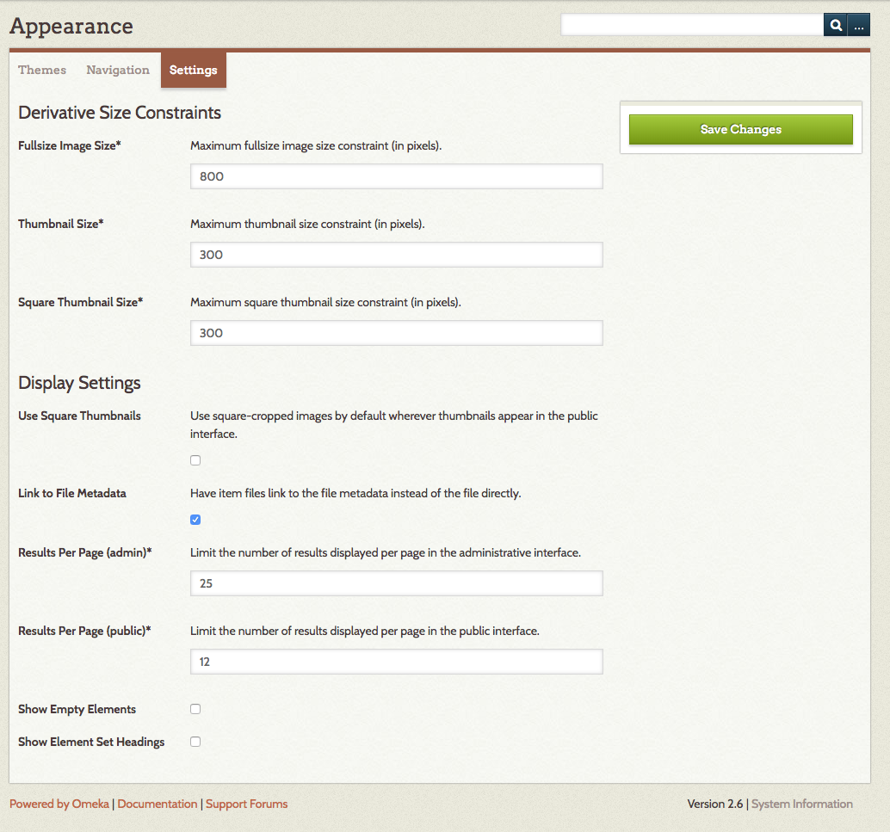
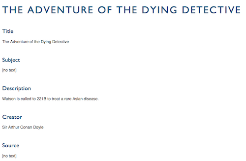
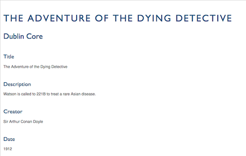

Appearance Settings
The Settings sub-tab in the Appearance section help you to manage derivative image sizes and adjust some of the display settings for items on the public and admin sides. It is divided into two sections: Derivative Size Constraints and Display Settings

Derivative Size Constraints
In this section, you can set the default maximum image sizes for Fullsize, Thumbnails, and Square Thumbnails in pixels for the longest side of the image.
Note that these settings are general for the install - the size at which thumbnails display on item browse, exhibit, and other pages may also depend on which theme you are using.
These following are the default settings for the three size constraints, in pixels
- Fullsize Image: 600;
- Thumbnail: 300;
- Square Thumbnail: 200.
To make changes, simply type a number into the corresponding text field.
Please note that changes to these settings will only affect files uploaded after you have made the changes; it does not retroactively re-size existing files. If you want to change existing files, you will need to install the Derivative Images plugin
Those with access to the server files can also manage thumbnail creation settings to change where thumbnails crop the image (see linked documentation for more information)
Display Settings
These settings relate to the display of results on the public and admin sides and some aspects of metadata display on the public side.
Use Square Thumbnails set the installation to use square-cropped images by default wherever thumbnails appear in the public interface, regardless of themes (NB: Omeka Classic versions 2.5 and higher only).
Link to File Metadata when this box is checked, clicking on a file on an item's public show page will take site users to the file's metadata page rather than the fullsize image.
Results per page (admin) sets the number of results on the admin-side browse pages for items, collections, and exhibits. The default is 10.
Results per page (public) sets the number of results on the public-side browse pages for items, collections, and exhibits. The default is 10.
Show Empty Elements determines whether you want to show empty metadata fields on the public pages. The default setting is unchecked. If you wish show all metadata (empty and filled) fields, check this box. The image below shows how empty elements display on a public item show page.

Show Element Set Headings Unchecking this box will remove the element set headings (e.g. "Dublin Core," "Person Item Type Metadata") from display on the public pages of the site, uncheck this box. The default setting is checked. The image below shows the Dublin Core heading on a public item show page.
